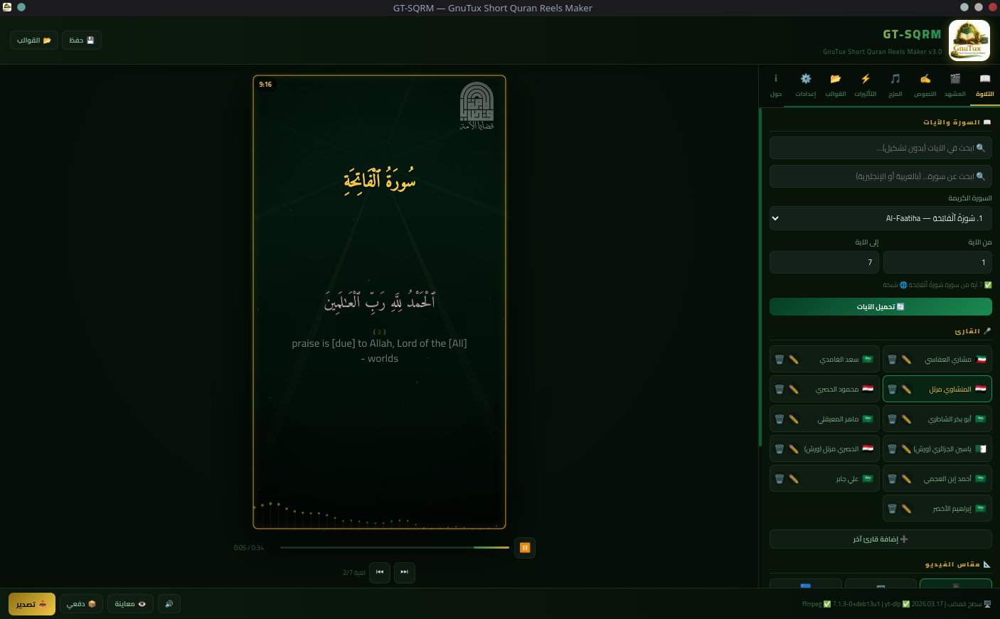
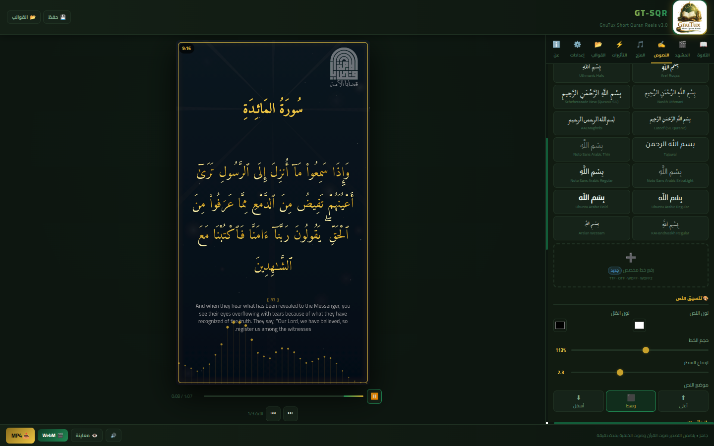
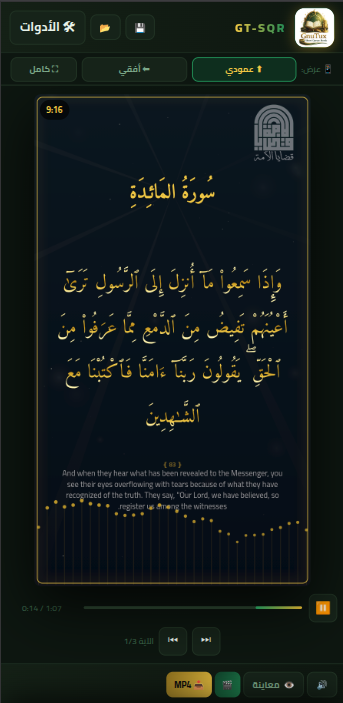

GT-SQRM & GT-SQR
صانع ريلز القرآن الكريم بجودة احترافية — بنسختين متطابقتين الميزات
محرّك تصدير حتمي بدون تقطّع · بحث آيات بتطبيع التشكيل · القرآن الكامل دون اتصال · 16 خطاً قرآنياً · 10 أنماط ظهور · 9 أنماط ألوان · 9 أشكال موجة صوتية · خلفيات متعددة بانتقالات · اسم السورة · قوالب منصات



النسختان متطابقتان في معظم المزايا منذ v3.0. الفروق الباقية تخدم خصائص بيئة كل واحدة.
GT-SQR — الويب (PWA)
- ✓ محرّك WebCodecs الحتمي — لا تقطّع
- ✓ يعمل فوراً في المتصفح — بدون تثبيت
- ✓ PWA قابل للتثبيت كتطبيق
- ✓ يدعم الهاتف (3 أوضاع عرض)
- ✓ كل مزايا v3 الأساسية
- ✕ لا استيراد yt-dlp / wget
- ✕ لا تصدير دفعي
GT-SQRM — سطح المكتب (Linux)
- ✓ محرّك ffmpeg الحتمي — أداء أعلى
- ✓ اختيار CRF/preset/كوديك يدوياً
- ✓ استيراد من يوتيوب عبر yt-dlp
- ✓ wget / aria2c للروابط المباشرة
- ✓ تصدير دفعي لقائمة سور
- ✓ ffmpeg-log في الواجهة
- ✓ AppImage · DEB · RPM
محرّك تصدير حتمي
إطار-بإطار عند t = i/FPS بالضبط — لا تقطّع نهائياً. ffmpeg على سطح المكتب، WebCodecs في الويب مع fallback تلقائي للكوديك.
اسم السورة في الأعلى
قسم مستقل في أعلى تبويب النصوص: الموضع + الحجم + اللون + 3 صياغات (سُورَةُ [الاسم] · حِزْبُ [الاسم] · الاسم فقط).
10 أنماط ظهور + المختلط
مباشر · تلاشي · انزلاق · تكبير · سقوط · صعود · ضبابي · دوران · ارتداد · يمين-يسار. وضع مختلط يدوّر الأنماط بترتيب ثابت حسب رقم الآية.
9 أنماط ألوان
عادي · دافئ · بارد · ليلي · صحراء · سينمائي · أبيض-أسود · Sepia · بنفسجي رمضاني. تطبيق per-pixel ضمن خط الرسم الموحّد.
9 أشكال موجة صوتية
bars · line · area · dots · mirror · radial · blocks · pulse · wave3D. مع مضاعف حدّة حتى 300% وحساب طيف عبر FFT في التصدير.
خلفيات متعددة + crossfade
قائمة تشغيل قابلة لإعادة الترتيب، انتقال xfade سلس 500ms، صوت per-clip مستقل لكل مقطع (تشغيل/كتم/مستوى).
بحث بتطبيع التشكيل
"الفاتحه" تطابق "الفَاتِحَة"، "الرحمن" تطابق "الرَّحْمَٰن". بحث في 6,236 آية بسرعة فورية مع تظليل ذهبي.
يعمل دون اتصال
القرآن الكامل (~1.5MB) محفوظ محلياً + الترجمات في cache + 30+ قارئ. PWA كاملة في الويب، Electron محلي في سطح المكتب.
16 خط قرآني
Amiri Quran · Uthmanic Hafs · Scheherazade New · Lateef · Harmattan · Reem Kufi · Aref Ruqaa · Markazi Text + رفع خطوط مخصصة.
عرض كلمة-بكلمة
كشف الكلمات تتابعياً مع التلاوة. 3 سرعات + مدّة تلاشي قابلة للضبط + الحفاظ على تخطيط wrapText بدون قفز.
استيراد yt-dlp (سطح المكتب)
تنزيل من يوتيوب ومئات المواقع + wget/aria2c للروابط المباشرة + تقطيع زمني عند التنزيل + مجلد حفظ دائم.
قوالب منصات + قوالب مستخدم
Reels · Shorts · TikTok · YouTube · Instagram Square/Portrait · Cinema. حفظ قوالبك الخاصة في localStorage واستردادها بنقرة.
اختر صيغة الحزمة المناسبة لتوزيعتك. كل الحزم x86_64 وتعمل دون اتصال.
AppImage
ملف تنفيذي مستقل لا يحتاج تثبيت. مناسب لـ Arch / Debian / Fedora / Ubuntu / openSUSE وأي توزيعة حديثة.
⬇️ تحميل AppImage./GT-SQRM-3.5.0.AppImage
حزمة DEB
حزمة .deb رسمية. يُدمَج التطبيق في قائمة البرامج تلقائياً مع الأيقونة وأيقونة سطح المكتب.
sudo apt --fix-broken install
حزمة RPM
حزمة .rpm رسمية. تعمل على Fedora 38+ و RHEL 9+ و openSUSE Tumbleweed/Leap.
# أو: sudo rpm -i ...
🔐 التحقق من سلامة الملف
قبل التشغيل، تحقق من أن المجموع الاختباري SHA-256 يطابق المنشور أعلاه:
- 🕋 البَسمَلةُ تُتلى لا تُكتَبُ وَحسب — شَريحةٌ مُستَقِلّةٌ صَوتُها 001001.mp3 بِنَفسِ القارئ، مَعَ توگلٍ يَحذِفُها مِنَ النَصِّ والتِلاوةِ مَعاً
- ⚡ سَقفُ دِقّةِ التَصدير — كانَ حَقلُ «دقة الفيديو» عُنصُرَ واجِهةٍ مَيِّتاً لا يَقرَؤُهُ أَحَد: تَختارُ 720p فَيُصَدَّرُ 1080p. النُزولُ إلى 720×1280 يَقتَطِعُ 55٪ مِنَ العَمَل
- 🎚️ مُقتَرَحاتُ جَودةٍ (🪶 صَغير · ⚖️ مُتَوازِن · 💎 عالٍ) وتَقديرُ حَجمِ المَلَفِّ قَبلَ التَصديرِ لا بَعدَه — تُحسَبُ مِنَ الأَبعادِ الفِعليّةِ ومُعَدَّلِ الإطارات
- 🔁 لُحمةُ الحَلقة — عَودةُ قائِمةِ المَقاطِعِ مِن آخِرِها إلى أَوَّلِها كانَت قَطعاً حادّاً في التَصديرِ وَحدَهُ بَينَما المُعاينةُ تَمزُجُها
- 💾 نُسخةُ الويب: طَبَقةُ تَسليمٍ تَحجِزُ وِجهةَ الحَفظِ بِنَقرَتِك —
<a download>وَحدَهُ يَفشَلُ صامِتاً في وَضعِ PWA المُستَقِلّ - 🔋 نُسخةُ الويب: قُفلُ يَقَظةِ شاشةٍ + MessageChannel بَدَلَ setTimeout — فَلا يَقِفُ التَصديرُ عِندَ إطفاءِ الشاشةِ أو تَبديلِ التَبويب
- ⚡ نُسخةُ الويب: خَلفيّةٌ سَلِسةٌ بِمُزامَنةِ تَشغيلٍ بَدَلَ نَقلةٍ لِكُلِّ إطار
- 📌 مَنقولٌ مِن GT-SIRM v1.2–v1.3 بَعدَ أَن أَثبَتَهُ الاختِبارُ عَلى جِهازٍ حَقيقيّ
- 🎬 مقاطع خَلفيّة مُتَقَدّمة — 12 تَحسيناً وإصلاحاً (منقول من GT-SIRM v1.2)
- 👁️ إعماء (hidden) لِكُلّ مَقطع — يَبقى في القائمة، يُتَخَطّى تلقائيّاً
- ✂️ تَقليم لِكُلّ مَقطع (per-clip trim) في المُعاينَة والتَصدير (ffmpeg xfade+trim)
- 🎨 11 نَمط اِنتقال بَديل عن fade فَقط: wipe/slide/circle/radial/dissolve مَع نُعومة حَواف
- ↩️ Undo/Redo عامّ — 30 إجراءً + اختصارات Ctrl+Z / Ctrl+Y / Ctrl+Shift+Z
- ♻️ استعادة آخر مَقطع مَحذوف + 🌟 وميض ذَهبيّ عِند النَقل + 🖱️ نَقر لِلتَنشيط
- 🏷️ عَلامة مائيّة مُطَوَّرة — توگل تَفعيل + إزاحة رَأسيّة 0-40%
- 🐛 إصلاحات جَوهريّة: الوَميض عِند الاِنتقال، الصَوت المُستَمِرّ، WebM Infinity، bgVidNext في pause/start
- 🚀 تَصدير الويب (Bug#1): استُبدِل playbackRate 16× بـdeterministic seek لِكُلّ إطار
- ⏯️ التِلاوة تَستأنِف من S.elapsed + restartAll يُعيد ضَبط حالة الخَلفيّة كامِلَةً
- 🎥 فيديو التِلاوة الجاهز (recvid) كمَصدَر صَوت — يَستَبدِل bgAudio في المُعاينَة والتَصدير V2
- 🔧 مزامنة 9 دَوالّ recvid حَرفيّاً من GT-SIRM v0.7.3
- 🐛 إصلاح: removeBlackBackground alias + auto-disable لِمَصادِر القرآن عِند تَفعيل recvid
- 🎨 chromakey + مُدَّة فيديو التِلاوة تُوَزَّع تلقائيّاً
- 🎉 إصدار رئيسي — مزامنة كاملة بين النسختين (سطح المكتب + الويب)
- 📿 اسم السورة في الأعلى مع 3 صياغات للبادئة
- 🎭 10 أنماط ظهور للآيات + وضع مختلط
- 🎨 9 أنماط ألوان (إعادة تسمية "color filter" → "أنماط الألوان")
- 🔊 9 أشكال موجة صوتية + مضاعف حدّة 300%
- 🎥 صوت per-clip لكل خلفية فيديو
- 📦 تحزيم ثلاثي: AppImage + DEB + RPM
- 🛠️ توحيد بادئة localStorage + إصلاح init order + إصلاح تكرار "سورة"
- 🎬 محرّك تصدير V2 الحتمي (frame-pipe عبر ffmpeg / WebCodecs)
- 🔍 بحث الآيات والسور بتطبيع التشكيل (6,236 آية)
- 📚 القرآن كاملاً محلياً للعمل دون اتصال
- 📝 عرض كلمة-بكلمة + خلفيات متعددة + crossfade
- 🔤 16 خطاً عربياً قرآنياً
- إصلاح مجلد الحفظ الدائم + فصل كتم المعاينة عن التصدير
- تحسين القائمة السياقية وإعادة ترتيب أزرار الواجهة العربية
- 🎉 الإصدار الأول — دعم ffmpeg و yt-dlp وواجهة عربية كاملة
إذا أردت البناء بنفسك (يلزم Node.js 18+ و rpmbuild/alien للـ RPM):
cd GT-SQRM/GT-SQRM-main
npm install
npm run build:all # AppImage + DEB + RPM في تشغيلة واحدة
# أو منفصلة:
npm run build # AppImage فقط
npm run build:deb # DEB فقط
npm run build:rpm # RPM فقط (مع alien fallback)
إذا اخترت AppImage، يمكنك استخدام GearLever لدمج التطبيق في قائمة البرامج بسهولة:
# ثم اسحب ملف GT-SQRM-3.5.0.AppImage إلى نافذة GearLever
سيظهر التطبيق تلقائياً في قائمة البرامج مع الأيقونة الخاصة به. حزم DEB و RPM تتولى ذلك تلقائياً بدون أدوات إضافية.